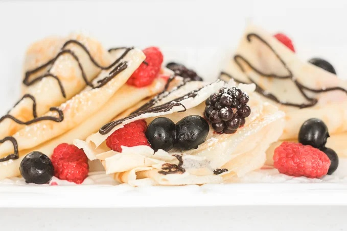

Nutella Crepes With Berries

How to Make the Best Nutella Crepes with Berries
These French-style Nutella crepes are light, thin, and oh so buttery. It is an easy to make blender recipe that
will have you craving breakfast all day! Yes, you read that right, the batter is mixed together in the blender.
This combination is pretty much made for each other. But if chocolate and berries are not your thing, then maybe
chocolate and bananas are? Yup, you can easily substitute the berries for any other fruit and personally,
bananas is one of my favourite alternates.
INGREDIENTS
- 1 cup all-purpose flour
- 2 large eggs
- ½ cup whole milk
- ½ cup water
- 2 tablespoons butter, melted
- ½ teaspoon salt
- 1 cup mixed berries
- 1 cup Nutella
- ½ tablespoon icing sugar
STEPS
- In a large mixing bowl, whisk together flour and eggs. Add in milk, water, butter and salt, and stir to
combine. Pour the liquid batter in a blender. Blend for 1 minute until smooth.
- Lightly grease a non-stick skillet and heat over medium heat. Scoop ¼ cup of batter on the pan. Quickly tilt
the pan in a circular motion to spread the batter evenly on the surface of the pan. Cook crepe for 2
minutes, or until a light golden brown colour. Loosen with a spatula and flip over. Cook on the other side
for another 1-2 minutes, or until crepe is a golden brown colour.
- Slide the crepe out of the pan and onto a plate. Repeat above steps with remaining batter.
- For each crepe, spread berries on half of the crepe and drizzle with Nutella on top. Fold the crepe into
quarters and drizzle extra Nutella on top. Sprinkle some icing sugar on top.